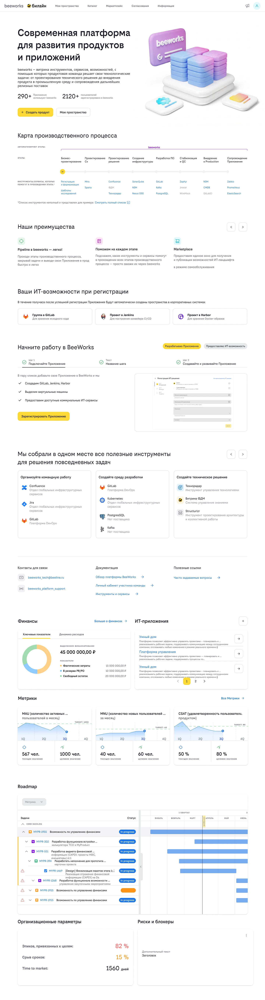
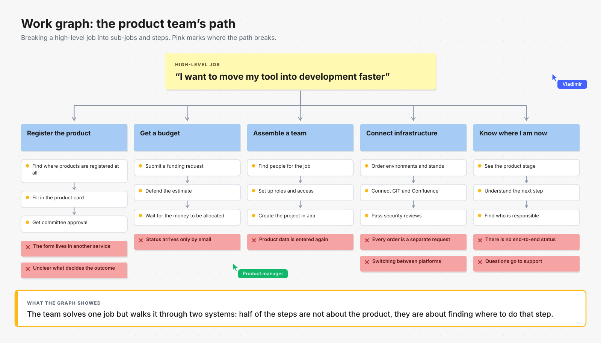
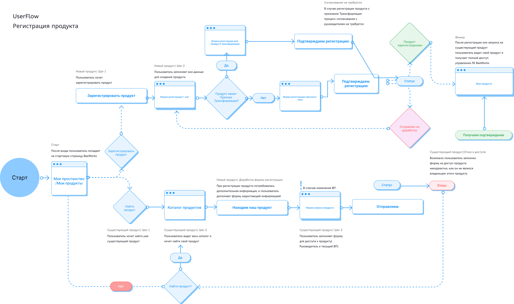
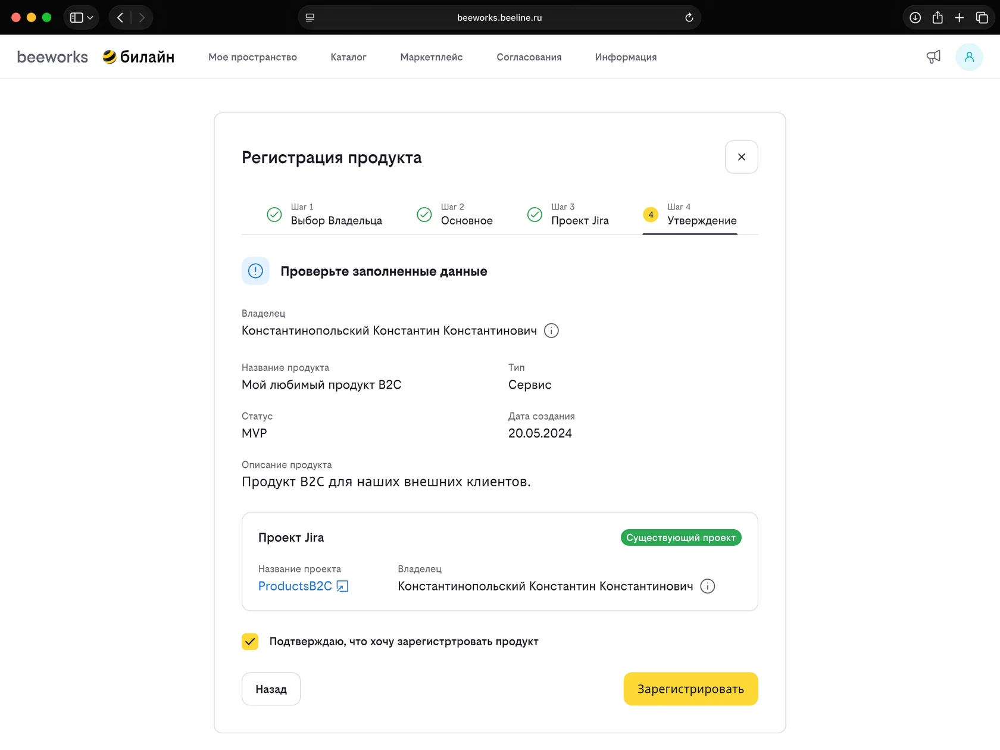
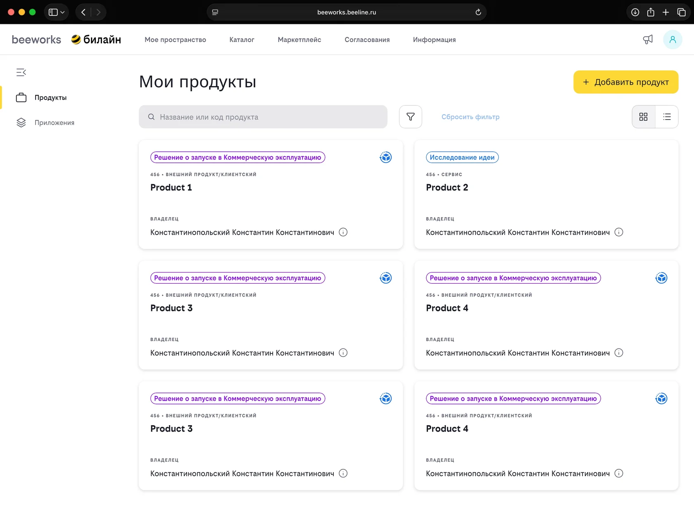
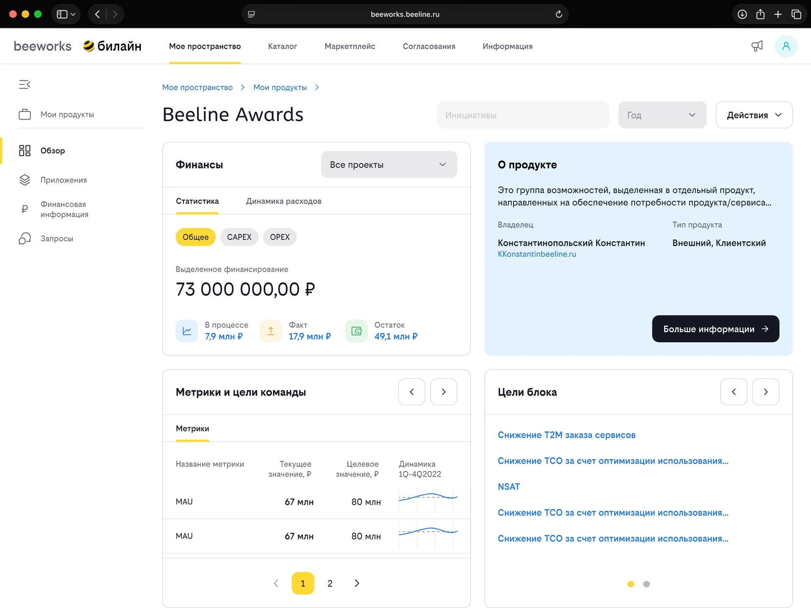
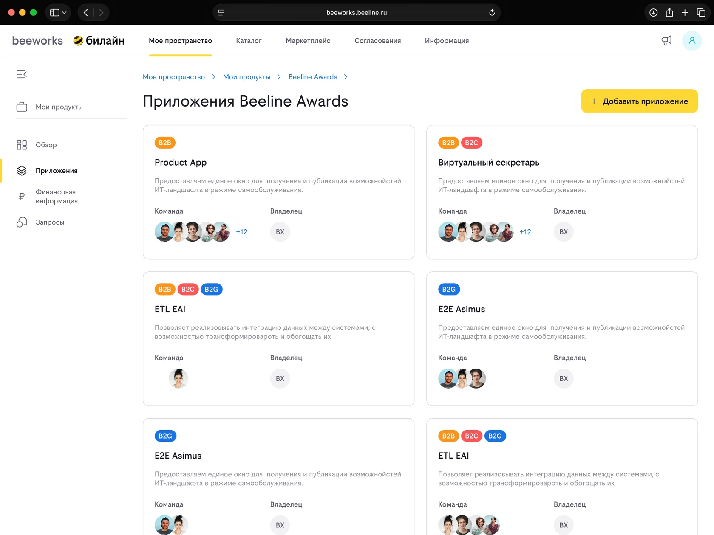
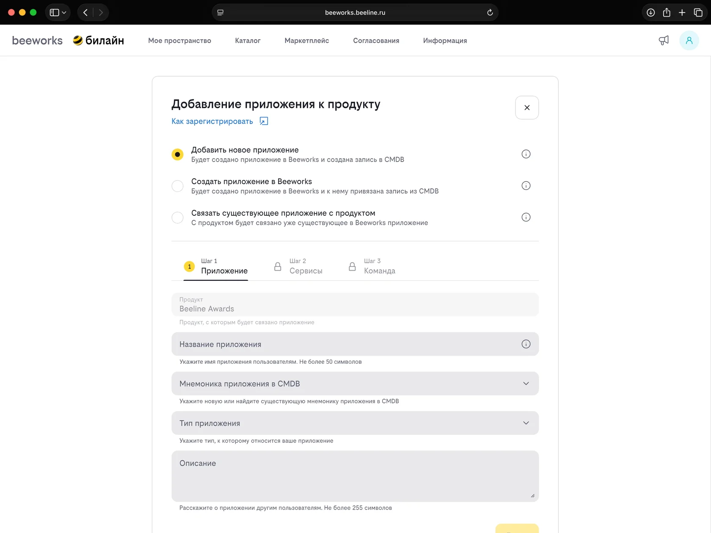
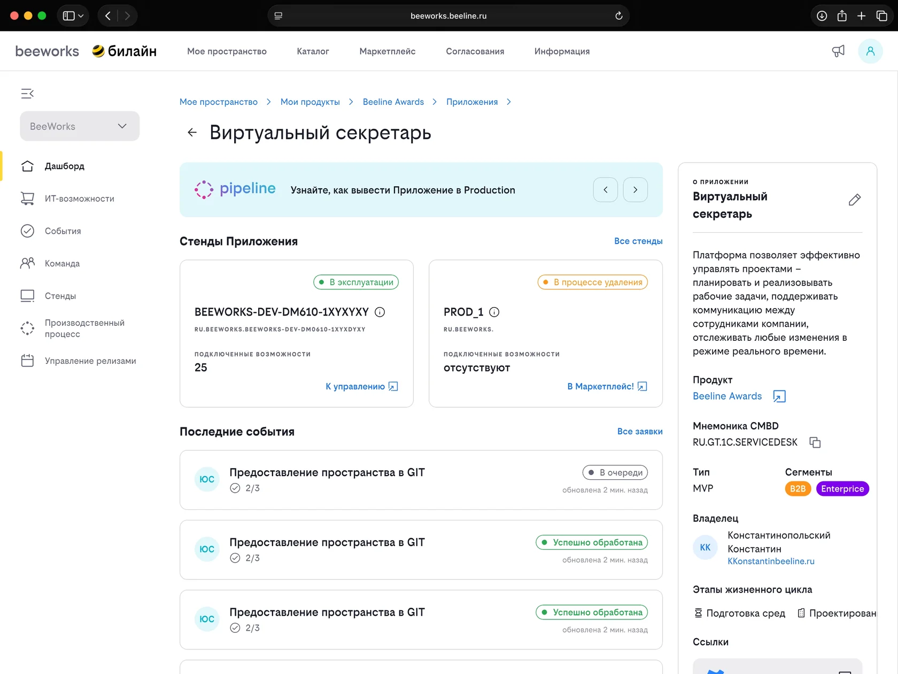

The key platform of Beeline’s B2B division – a showcase of tools and services for product teams.
beeworks.beeline.ru

Use the slider on the right to scroll the page.
Open full size ↗
Project outcomes
−30%registration time
2 → 1a unified platform journey
×2platform MAU growth
The task
Ship new products faster: shorten the product team’s path from idea to the start of development and take the flow of questions off the support team.
The problem
A complex journey split across two platforms when teams registered a product and its applications
Duplicated functionality and data
A stream of questions to the support team as a result of the unintuitive path
And as a result – slow launches of new products
Discovery
To understand where the friction came from I ran interviews with users from product teams, built a work graph of the product and application registration process, analysed the problems in the current flow and shaped the key research insights.

Key research insights
Users see a product launch as one single process. They do not split registration, approval, budgeting and infrastructure into separate services – they expect to go through the whole path in one place.
Users lack transparency of the process. It was hard to tell which stage the product was at, what had already been done and what to do next.
Switching between two platforms costs users their context. After each switch they had to work out the process again and repeat steps they had already completed.
The support team is overloaded because of flaws in the user journey. Most questions were caused not by the complexity of the process but by how poorly it was explained.
Re-entering the same data slows people down and irritates them. Product information was duplicated across systems, increasing the chance of mistakes.
A fragmented journey slowed down the launch of new products. The more manual steps, service switches and uncertainty there were, the longer teams took to get from an idea to the start of development.
The solution
Merge the two products into a single entry point.
show the user a clear architecture of products and applications
let them register a product and an application on one platform
support the product lifecycle: committee approval, budgeting and so on
assemble a project team for the product and the application
connect the infrastructure the application needs
What changed in the journey
Before: a fragmented process
Product and application registration on separate platforms.
Repeated data entry and lost context.
Unclear progress and next steps.
After: one entry point
A product and its applications connected in one workspace.
Registration, team and infrastructure in one service.
End-to-end status makes progress visible.
UX design

The resulting journey
Product registration → My space → The selected product → Applications of that product → Adding an application → Dashboard of the new application.

01. Product registration – the start of the shared journey.

02. My workspace – access to the working context.

03. Selected product – related information in one place.

04. Product applications – the relationship to their parent product.

05. Add an application – continue the journey within the platform.

06. Application dashboard – move on to working with the application.
Let’s work together
Working on something similar?
Tell me about your product, team and timeline. We can discuss a project or a role.